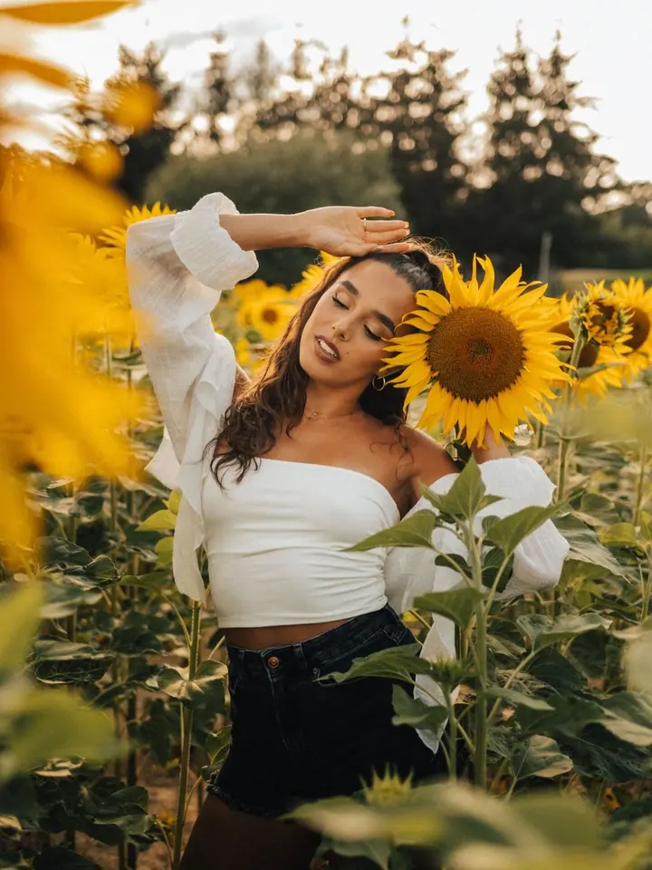
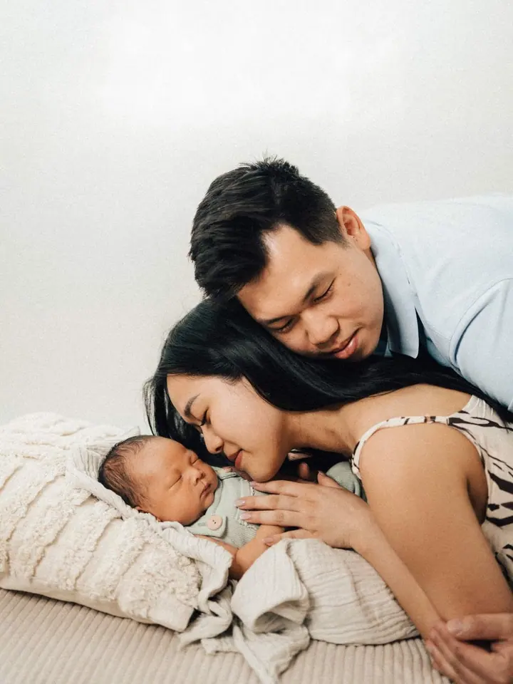
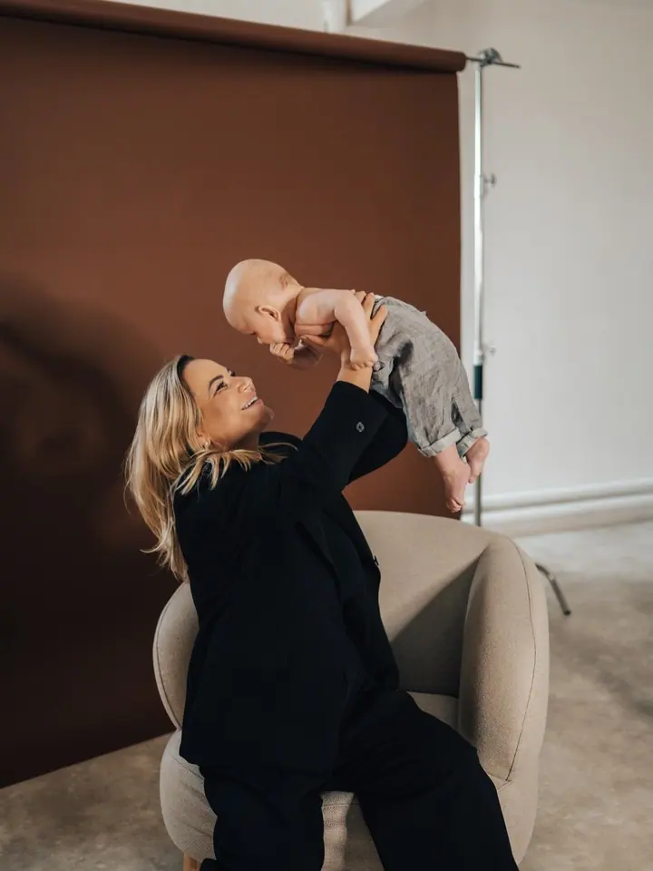
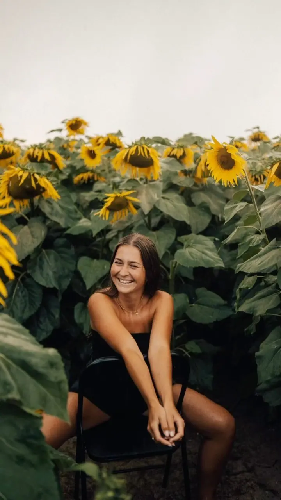

Newborn focení
Miminka fotím ideálně kolem desátého dne ve vyhřátém ateliéru, kde mám všechno potřebné včetně oblečení pro miminko. Pokud nechcete aranžované fotky, přijedu k vám domů na lifestyle focení.

Jmenuji se Kristýna Veselá a jsem svatební, rodinná a portrétní fotografka ze Šumperka. Ve svém ateliéru v Hrabišíně fotím miminka a nastávající maminky, portréty a rodi…
Rezervovat termínFotím hlavně na Šumpersku, ale na svatbu za vámi dojedu kamkoli. Focení je pro mě koníček a zároveň práce, kterou miluji. Nafotím vám svatbu, těhotenské a rodinné fotky, miminko, rande i produktové fotky.


Venku mám nejraději přirozené denní světlo a nebojím se žádného počasí. V dešti sice nefotíme, ale mlha, mráz nebo podzimní šero mají každé své kouzlo. Miminka a nastávající maminky fotím ve vyhřátém ateliéru v Hrabišíně, kde mám vše potřebné.
Kromě fotek se věnuji i grafice. Navrhuji svatební oznámení a razítka, do svatebního fotokoutku vám můžu půjčit polaroid a ve volném čase tvořím také @veselehackovani.
Co fotím
Miminka fotím ideálně kolem desátého dne ve vyhřátém ateliéru, kde mám všechno potřebné včetně oblečení pro miminko. Pokud nechcete aranžované fotky, přijedu k vám domů na lifestyle focení.
Portréty nejraději fotím venku za přirozeného denního světla, klidně na místě, které mi sami navrhnete. Když nepřeje počasí, fotíme v ateliéru.
Zachytím celý váš den nebo jen jeho část, jak budete chtít, a snažím se být co nejvíc neviditelná. Můžete si vybrat balíček Klasik (asi 6 hodin) nebo Maxi (asi 10 hodin) a ten vám ráda upravím na míru.
Fotíme v ateliéru i venku, nejdřív od sedmého měsíce, aby bříško krásně vyniklo. V ateliéru můžeme podle vašeho přání nafotit i odhalenější snímky.
Postup
Pošlete mi pár řádků o tom, co chcete fotit. U svatby uveďte datum, místo obřadu a hostiny a přibližný počet hostů. Klidně si můžeme zavolat nebo se potkat osobně.
Termín svatby si zarezervujete nevratnou zálohou. Všem doporučuji zásnubní focení v přírodě, kde se poznáme a vy uvidíte, jak fotím.
Dva týdny až měsíc před svatbou spolu doladíme harmonogram a detaily. Ve svatební den dokumentuji vše od rána do večera a pohlídám i maličkosti, jako je účes nebo lezoucí ramínka.
Svatební fotky upravuji obvykle 4 až 8 týdnů a předávám je na USB v dárkové krabičce spolu s pár vytištěnými fotkami. Po newborn focení si vyberete z náhledů a fotky vám pošlu ve dvou barevných verzích.
Otázky
Ano, na svatbu za vámi dojedu kamkoli. Dopravné mimo Šumperk je 6 Kč za kilometr tam i zpět.
Nejlépe do dvou týdnů od narození, ideálně kolem desátého dne, kdy miminko ještě hodně spinká. Objednejte se prosím už z porodnice, jakmile víte, kdy vás pustí domů.
Doporučuji nejdřív od sedmého měsíce, aby bříško krásně vyniklo. Fotit můžeme v ateliéru i venku.
Počasí se nebojte. V dešti sice nefotíme, ale každé počasí i roční období je v něčem krásné. Když venku opravdu nejde fotit, přesuneme se do ateliéru.
Při rezervaci platíte nevratnou zálohu 1 500 Kč. Svatby jsou většinou v sobotu a termínů je málo, proto doporučuji ozvat se včas.
